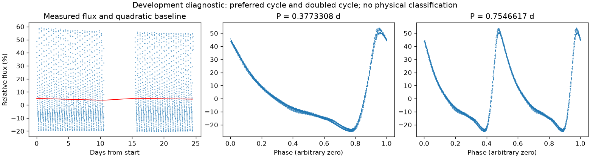
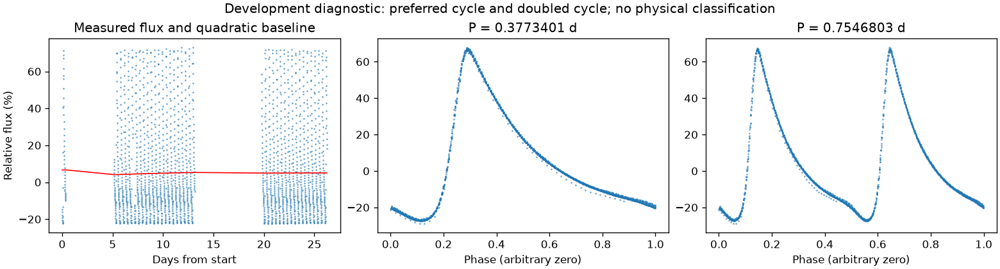

有重复信号，来源尚未充分检查
亮度重复周期约 0.37733548 天。这是优选亮度周期，未给出正式误差或物理分类。
第二版周期：0.37733083864411393 天；状态：preferred_lightcurve_cycle。

左图红线是缓慢基线；右面两图去除该基线。若未通过周期要求，两图只展示得分最高的竞争解释。
| 竞争周期（天） | 交替周期预测改善 | 两组各自改善 | 通过初筛 |
|---|---|---|---|
| 0.3773308 | 99.8% | 99.8% / 99.9% | 是 |
| 0.7546410 | 99.8% | 99.8% / 99.8% | 是 |
| 0.7716368 | 14.6% | 13.0% / 16.2% | 否 |
| 0.3858508 | 12.6% | 11.1% / 14.0% | 否 |
| 0.1927476 | -32.8% | -61.6% / -19.0% | 否 |
| 0.0943307 | -96.0% | -119.1% / -74.6% | 否 |
| 0.1886448 | -227.2% | -399.4% / -143.7% | 否 |
“预测改善”衡量用一组周期的形状预测另一组，比只有缓慢基线好多少；负数表示更差。搜索和预测共用了资料，因此这不是可信概率，也不是独立验证。
辅助数据检查：背景 SAP_BKG、指向修正 POS_CORR、亮斑中心 MOM_CENTR，或明确提供的仪器通道。
相关性只提示需要检查来源。恒星自身变暗也可能导致亮斑中心移动，不能据此断定是仪器。
第二版周期：0.3773401291367121 天；状态：preferred_lightcurve_cycle。

左图红线是缓慢基线；右面两图去除该基线。若未通过周期要求，两图只展示得分最高的竞争解释。
| 竞争周期（天） | 交替周期预测改善 | 两组各自改善 | 通过初筛 |
|---|---|---|---|
| 0.3773401 | 99.9% | 99.9% / 100.0% | 是 |
| 0.7546996 | 99.9% | 99.9% / 99.9% | 是 |
| 0.3678734 | 35.2% | 31.3% / 39.2% | 是 |
| 0.3868704 | 23.0% | 22.0% / 23.9% | 是 |
| 0.7361321 | 21.7% | 21.5% / 22.0% | 是 |
| 0.7736191 | 21.7% | 17.4% / 26.1% | 是 |
| 0.1839413 | -14.0% | -15.5% / -13.2% | 否 |
| 0.1940508 | -68.3% | -99.0% / -47.7% | 否 |
“预测改善”衡量用一组周期的形状预测另一组，比只有缓慢基线好多少；负数表示更差。搜索和预测共用了资料，因此这不是可信概率，也不是独立验证。
辅助数据检查：背景 SAP_BKG、指向修正 POS_CORR、亮斑中心 MOM_CENTR，或明确提供的仪器通道。
相关性只提示需要检查来源。恒星自身变暗也可能导致亮斑中心移动，不能据此断定是仪器。